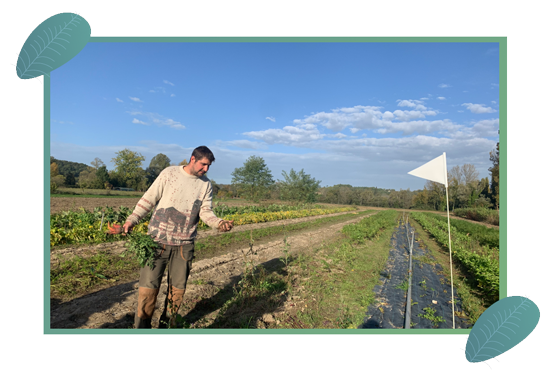

Siganen
“Terre de liens a acheté la ferme de Siganen le 19 décembre 2019 à Anne le Maout, une paysanne et militant active de la bio. Elle voulait à la suite de cette vente que les terres qu’elle avait travaillées restent agricoles et biologiques. Ce sont donc Geert Schoenmakers,
Myriam Bourgy et Didier Boudon qui ont repris la ferme et que l'histoire de Siganen continue.”